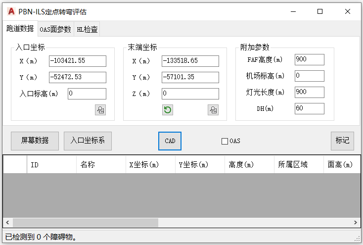

功能简介
【PBN-ILS 进近】基于 OAS 面参数评估 PBN-ILS 定点转弯区的障碍物穿透，含 HL 修正检查，可绘制进近复飞评估面并导出 KML。
界面预览

界面元素
| 选项卡 / 控件 | 说明 |
|---|---|
| 跑道数据（选项卡） | 入口坐标、末端坐标、附加参数；含【入口坐标系】【屏幕数据】【拾取】【加载】/【保存】。 |
| OAS面参数（选项卡） | OAS 面各段参数。 |
| HL检查（选项卡） | HL 修正检查，核验障碍物修正高度。 |
| 一键评估 / CAD / KML | 评估穿透、绘制评估面、导出 KML。 |
通用评估流程
- 命令行输入
Y54_PBN_ILS打开窗口。 - 【入口坐标系】建立评估坐标系，填入跑道数据与附加参数。
- 【屏幕数据】载入障碍物数据。
- 在“OAS面参数”中设置参数，必要时用“HL检查”核验修正高度。
- 【一键评估】检查穿透 →【CAD】绘制 /【KML】导出。
基础版限制：【屏幕数据】载入障碍物时，若图中多于 5 个障碍物点，会提示“基础版仅提供前5项数据评估”，并只取前 5 项参与评估。
联动：在障碍物列表中单击某行，图纸会自动高亮并居中到该障碍物。